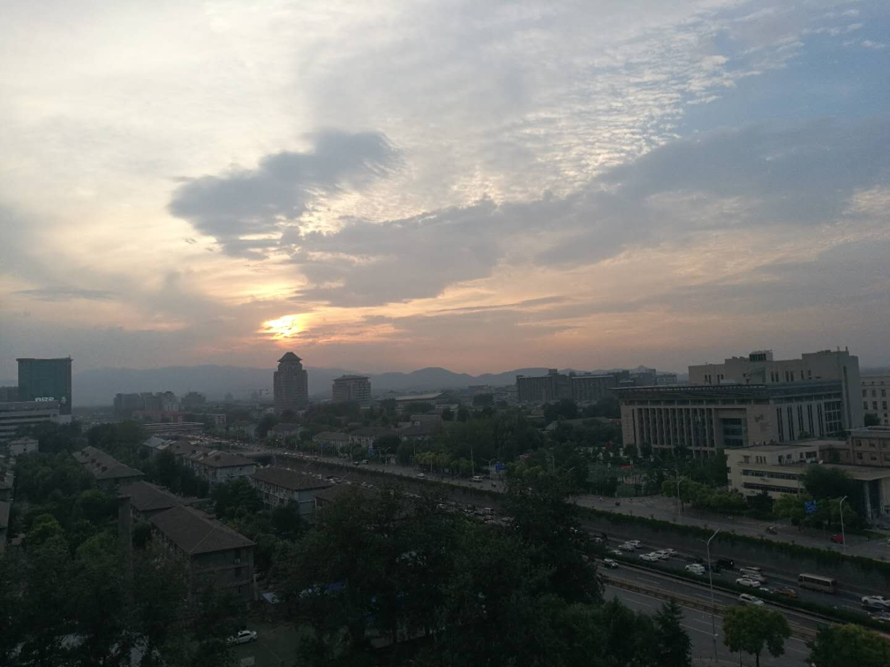

今天终于要离开北京了，正式结束在Intel的实习生旅程。现在在首都机场写下这4个月来在北京生活、在Intel实习的一些见闻和感悟。
在Intel的实习
4月初的时候拿到了Intel的实习机会，当时还是非常兴奋的，因为毕竟Intel作为世界顶级科技公司，有机会去里面当软件工程师实习生还是一段很有意思的经历。当然四个月下来，确实收获很多。我参与项目组是Intel Sports Group，项目做的主要是利用计算机视觉来做体育直播视频的分析（比如球、运动员的检测和跟踪，精彩时刻的识别等）、三维重建，让观看体育直播的观众们能够身临其境般地体验到比赛场地上的各种场景。我加入是system team，做的是怎么将各种Deep Learning算法模块组合成一个高吞吐、低延迟的高性能分布式系统，所以我们team做的就是怎么设计和搭建这种AI System。当时实习找的方向也是Computer Vision System方向的一些实习，因为研一时期一整年都在做计算机视觉偏算法层面的工作，负责了我们学校票据识别系统的核心识别算法的研究和系统的搭建，虽然系统在功能上是OK了，但是从系统层面考虑上，却欠缺比较宏观的思考和设计，总的而言这个系统太学生气，在稳定性、扩展性和性能方面都非常差。所以我在找实习时找的方向就是AI System方向的，希望到大公司看看他们要设计一个工业级的AI System会采取什么思路和技术。最后找到这么一个实习还是跟我的方向非常macth，这真是太幸运了。
在Intel当实习生还是非常幸福，公司对实习生还是比较重视，至少在给了我们这群实习生比较大的操作空间，比如源码对实习生全部开放，我们系统组的也可去看看算法组的代码实现，除此之外实习生一般都会被安排做一些探索性的工作，我在项目组负责的任务主要是一个新的任务调度框架（super-service）的实现、NFL新的pinelining探索、想方设法让整个系统做到实时。4个月来，60+次commit和和6000+行代码，证明了我这段实习经历并没有太划水，现在最希望的是能有朝一日在电视看到我们项目组的产品，这样子我写的代码才真正赋予了价值。
Intel的工作比较宽松，不需要打卡，每天把自己的工作做好就行了，因为大家都很自觉，所以这边没有加班氛围。我在所在的机构是英特尔中国研究中心，就我们项目组而言，大家的学历背景都相当高，基本都是985硕士起步，博士也很多，当然最多的还是清北人，比如我的导师，就是清华毕业的大佬，性格又平易近人，平时跟他讨论方案时感觉思路都快赶不上了，老是叫他能不能再解释一遍。我导师真是一个非常厉害的人，有时还跟我们说他当年和楼教主的在TopCoder上PK抢分的往事，听得我一晃一晃的。
外企很注意流程和规范，我们组的风格也是如此。我在这边确实接触到了很多工业界做产品开发的一些常用工具，GitHub做代码仓库（到这儿我才发现，原来企业也用GitHub），微服想，容器技术，用K8S做容器调度，pipelining做加速，Redis的使用，GFS，map-reduce。很多很多相关的技术，我都觉得可以运用到我的票据识别系统上，至少知道，要优化一个系统，怎么让他做大做强有哪些常用的思路可以尝试，回到学校后还是要好好继续设计我的票据识别系统，做成一个高性能的通用大规模OCR分布式系统。
在北京的生活
在北京呆了4个月了，除了在公司实习，剩下是时间就是生活啦。很高兴在住的地方遇到了一群优秀、好玩的小伙伴们，让我在北京的4个月没有感到孤独。来北京之后最大的感触就是，北京真是一个聚集各种人才的地方，大家喜欢从四面八方来到中国最繁华的地方需求工作学习的机会。在住的地方遇到了有太多太优秀的人才了，清北的，斯坦福的，UCL的，密歇根的，即使没有名校毕业的背景小伙伴，在其他方面都有很强的能力。他们都有很强的目标性，知道自己将来要做些什么，现在又该做哪些准备，比如有个大二学生就跑过来北京实习刷经历了。在这么多人交往中有两个小发现，第一个小发现是，来北京实习或者找工作的海外留学生很多。第二个小发现就是大家都喜欢追逐高学历，至少硕士，但大多数人还是计划读博，尤其是女生，这个比例更大。因为身边的想读博小伙伴们太多，使得我一度也花了一段时间思考我自己到底喜不喜欢科研，适不适合读博。
作为一个南方人，初来北京真的很不习惯，第一是空气，北京的空气真的非常差，雾霾严重，鼻子刚来的时候会很酸，但是后来习惯就好了。还有就是北京比广州干燥，因此我来北京不久手心就开始掉皮了。第二是饮食，北京的后吃的东西与广州相比真的少太多了，这边吃的东西都是偏咸，而且这边也没有吃青菜的习惯。第三是交通，因为北京是不禁摩的，所以路面上车多复杂，各类型的车各种穿梭，尤其是在人行横道绿灯过马路时，我们行人还要小心自己右边可能还会有小车左转冲出来跟你抢位置，在广州的话，这种情况就不会发生啦，因为广州的十字路口基本都带转向红绿灯。以上就是我在北京生活4个月的一些小小的感受。说到底，还是觉得我们大广东适合我生活：）
溜了溜了
时间过得真的非常快，想不到今天就要离开北京了，心里有点复杂，既有学有所成返回家乡的兴奋，也有难舍小伙伴的伤感。我第一天来北京的情景还历历在目：拖着行李箱，一出机场看到满天的飞絮，我心头不禁一愣，怎么北京飘着这玩意啊？天天飘着这个还怎么生活啊！后面才知道这叫做飘絮，北方每到这时分就会满城飘絮。今天是离开之日却是秋高气爽，阳光明媚，蓝天白云，清风徐来还有点凉意，估计是秋天的感觉吧。
在北京Intel实习的日子里，眼界开阔了很多，见到了太多优秀且谦逊的人，也看到了自己与别人的差距，从与他们的交谈中可以很清楚的看到，自己的眼界真的是太低太低了。研究生明年就要毕业了，家里人读书不多，想法都很简单，不求大富大贵，希望孩子找一些事业单位公务员什么的稳稳定定生活就好。自己作为可能有能力改变家庭命运的第一代人，自己的想法还有很多，私企？国企？外企？公务员？还有最近去了北京才萌生的读博念头，现在貌似每条路都有很好的机会，每条路都是很好的选择，自己现在的想法还是，把技术做到极致，专注技术才能让我每天过得开心和踏实。最后上一张在公司拍的一张照片，一眼望去，真是美极了。
